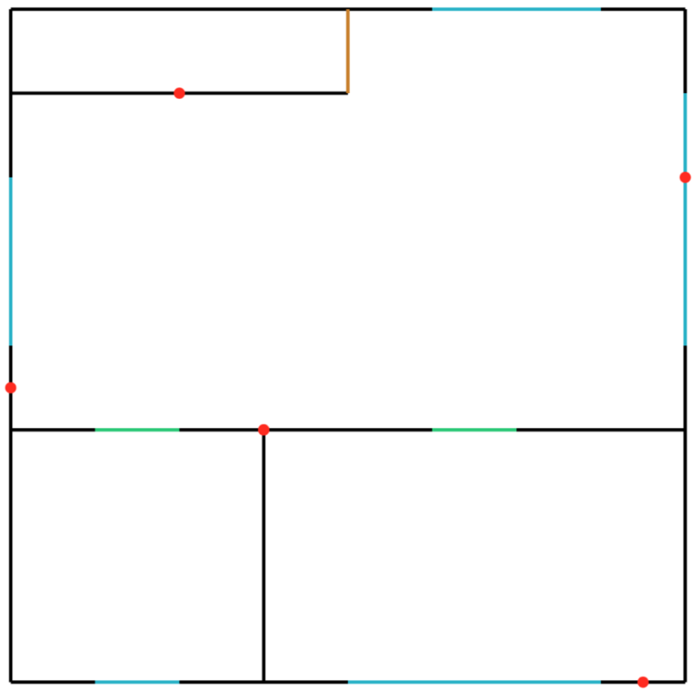
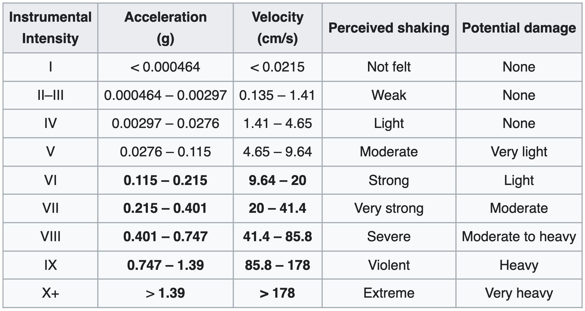

SmartBuildings
MySQL database which stores buildings equipped with sensors and provides data analytics functions such as damage estimates following earthquakes
Check out the code on GitHub
Full project documentation is available here
Restructured ER diagram is available here
ER diagram is available here
About
SmartBuildings is the database of a company wihch deals with construction and renovation of buildings with the purpose of improving their security
The database stores the internal structure of buildings, the jobs carried out on them and their cost,
the staff and the work shifts, the materials used and the warehouse, the sensors installed in the buildings and their measurements
and finally the possible calamitous events and the their effect on surrounding buildings
Highlights
Calculate the area of any given building
The walls of the buildings are stored as segments in the Euclidean plane [(X1, Y1), (X2, Y2)]
,
this means that using the shoelace formula we can calculate the area of any
given building, and in the database there is a function which does just that
In order for this to work we must:
- Only consider the polygon formed by the external walls of the building
- Order the vertices of that polygon in either a clockwise or counter clockwise order
The first one is trivial, to achieve the second one we can simply start from a random point of
the polygon and then query the walls' table to get the two adjacent points, if we keep track of
which points we already visited we will end up with either a clockwise or a counter clockwise order, depending
on the random choice made at the first point (the only in where we could have gone to either adjacent
point since neither of them was already visited)
Create an svg plan of any building floor
The database contains a function which outputs a string representing the svg plan of any given building floor:
- Blue segments are windows
- Green segments are doors
- Brown segments are generic openings
- Red dots are sensors

Approximate earthquakes magnitude using accelerometers data
The database contains a stored procedure which approximates the magnitude of an earthquake using data collected
form accelerometers in nearby buildings
To calculate the perceived magnitude of the earthquake by a given building we can use the following table:

We can then use the perceived magnitude \(Mercalli(r)\) of a building distant \(r\) km from the epicenter to
approximate the intensity of the earthquake in its epicenter \(Mercalli_0\) using the following formula:
\( Mercalli(r) = \frac{Mercalli_0}{\left(\frac{r}{\mu} + 1\right)^2} \)
- \(\mu\) is the attenuation coefficient of the mechanical waves coming from the earthquake, by default 600
- \(+ 1\) stops the function from going to \(+\infty\) for \(r\to0\)
- The exponent 2 at the denominator accounts for the fact that the energy carried in mechanical waves attenuates quadratically with the distance from the epicenter
Go back to all the projects